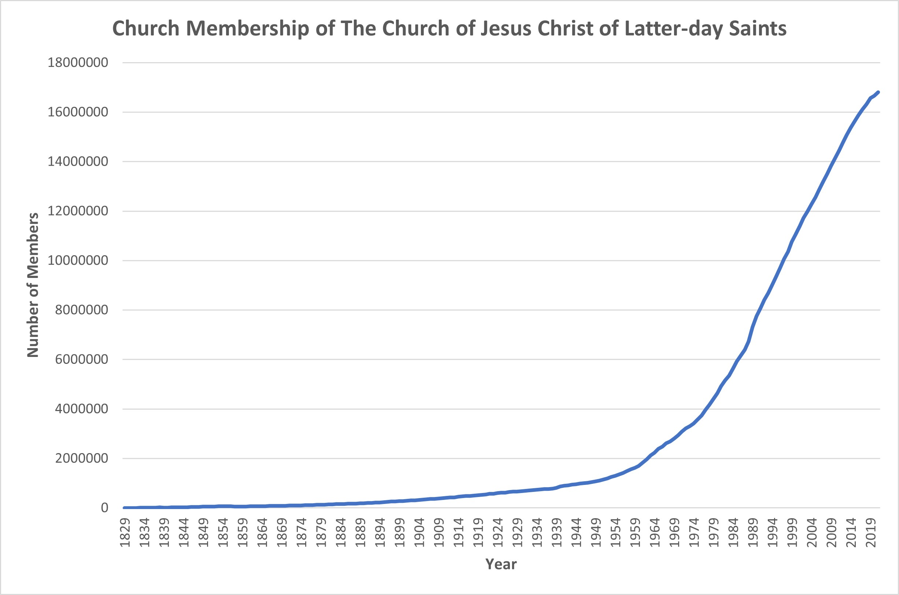
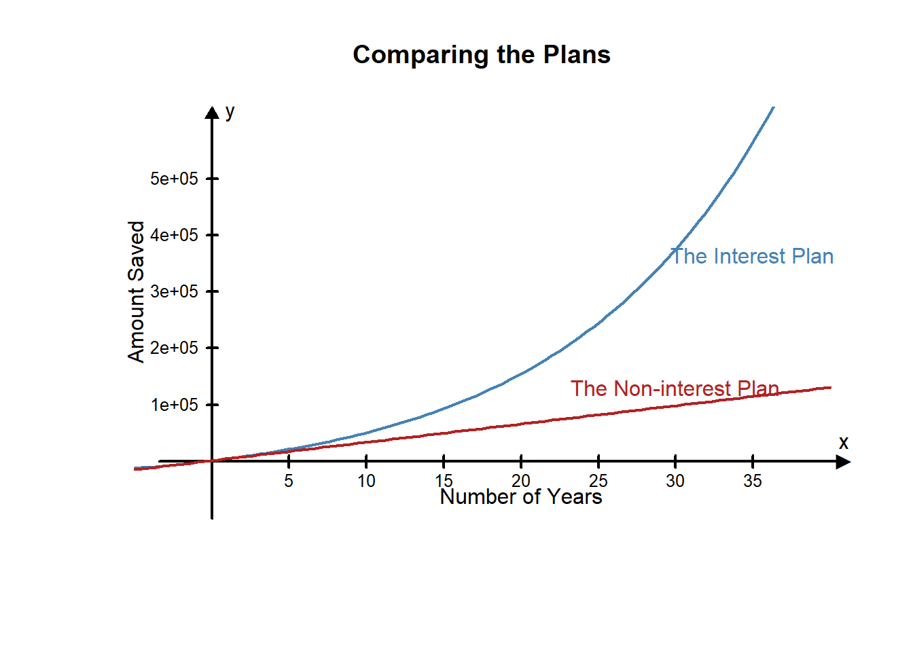

Lesson 9 - Opening story
(1:10 mins, L9 Opening Story Transcript)
Most things change over time. Some things change quickly, like the weather or stock prices. Other things change slowly, like the depth of the grand Canyon, or recovering from a significant injury. Change, whether fast or slow, is always happening around us. When we are making decisions using the Quantitative Reasoning Process, it is important to determine how quickly things will change. This is especially true of financial decisions.
When we consider saving money or taking out loans, the rate at which our savings or loan balance changes is an important factor. When we save money, we look at the rate at which interest builds up and is added to our balance. When we take out a loan, we want the amount of interest we pay each month to decrease as time passes. However, since interest on loans compounds, our loan balance can start to grow very rapidly. Loans can quickly get out of control if we do not manage our finances well.
Amadi’s story from the opening video is a good example of a situation of change over time. Amadi wants to know how the amount of money he is saving for his home will change over time. He wants to make sure that he has enough money to purchase a home.
We will start by applying the Quantitative Reasoning Process to Amadi’s example shown in the opening video.
Amadi wants to save up enough money to purchase a home in 10 years. He already has $12,000 saved, but he expects the home to cost $50,000 and wants to know how much money he needs to save each month. He believes he can get an interest rate close to 1.5% APR on a savings account. He needs to determine how much money to save each month in order to reach his goal.
The variables in this situation are:
Amadi has to make the following assumptions:
The total amount of money Amadi will have saved in ten years is a function of the amount he saves each month.
The Excel payment function, PMT, from Lesson 7 will help Amadi determine how much money he needs to save each month. In Lesson 7 we used the PMT function to help us find loan payments. When computing payments on a savings account, the PMT function is used in a similar way.
Recall that the syntax for the PMT function is \[ \text{=PMT(rate, number of periods, loan amount)} \] However, the function has a fourth optional input: \[ \text{=PMT(rate, number of periods, PV, [FV])} \] In this case, PV stands for present value and FV stands for future value. [FV] is in square brackets to show it is optional. If we want to figure out how much to save each month, the current balance in our savings account is the present value (PV) and the total amount we need to save is the future value (FV).
Amadi used this command to set up his Excel file.
Notice that some numbers were positive and some were negative. Remember that a negative number is used for money “leaving your wallet” and a positive number is for money “entering your wallet”. Because Amadi is putting $12000 in his savings account now, the money is “leaving his wallet”" and will be negative. His monthly payments are also negative. But the $50,000 he will have saved at the end of 10 years is money he will get to take out of the bank and “put back in his wallet”, so it is entered in Excel as a positive number.
The Excel output from the PMT function shows Amadi he needs to save $278.71 each month in order to have saved $50,000 in 10 years.
After doing these calculations, Amadi realizes he needs to save at least $278.71 each month. He carefully examines his monthly budget. He decides if he is careful with the money he earns, he can save $300 each month. Saving a little extra every month will help, just in case he isn’t able to get the interest rate he wants or if he has an emergency and can’t deposit the full payment for a month or two.
After saving for a year, Amadi takes some time to review and evaluate his plan. He finds that saving $300 every month is difficult. It requires him to be extremely careful about the money he spends, but he is making it work. As he reevaluates his assumptions, he finds them to be fairly accurate. He is happy with the progress he has made.
L09 - Interactive 1: Amadi’s Savings
(L09-1 ADA Interactive Transcript)
Notice that the amount of money in Amadi’s account is changing over time. Each month the account balance changes as he earns interest and makes new deposits to the account. We often talk about how fast things change, or rates of change. Rates of change apply in many situations. For example, imagine you just bought a new car. Over time, the car will depreciate. The value of the car goes down as time passes. The cost of gas rises and falls. As the car ages, systems wear out and the cost of maintaining the car typically goes up.
In this lesson we will learn some mathematical principles that can help us quantify change. Predicting and understanding how things change helps us effectively use the Quantitative Reasoning Process to make good decisions in situations where change occurs over time.
Graphs of functions give us a visual way to see how fast a quantity is changing. When we look at graphs of functions, the rate of change is represented by the slope of the line or the curve. Some functions have constant slopes and some functions have variable slopes. This distinction is important to consider when we study change over time.
Let’s look at an example of a function with a constant slope. Karina is working at her first job after graduating from college. When she started working, she was paid an annual salary of $32,000 per year. Every year, her employer gives her a raise of $1,600 per year. Her annual salary can be represented as a function of the time she has worked at the store.
Let \(y\) represent her annual salary and let \(x\) represent the number of years she has worked for the company. Then, we could say:
\[ y = 1600x+32000. \]
Let’s look at some inputs and outputs of this function:
| \(x\)=number of years | \(y\)=annual salary |
|---|---|
| 0 | \(y=1600(0)+32000=\$32000\) |
| 1 | \(y=1600(1)+32000=\$33600\) |
| 2 | \(y=1600(2)+32000=\$35200\) |
| 3 | \(y=1600(3)+32000=\$36800\) |
| 4 | \(y=1600(4)+32000=\$38400\) |
| 5 | \(y=1600(5)+32000=\$40000\) |
Our chart shows that the function \(y=1600x+32000\) accurately represents Karina’s situation. In this chart we see that for each additional year Karina worked for the company, her salary increased by $1600 per year.
This is a linear function with a slope of \(m=1600\) and a \(y\)-intercept of \(32000\). When we look at the graph of the function, the slope of the line represents the rate of change.
Slope is the change in \(y\) divided by the change in \(x\). In this equation, we can see that the slope is 1600.
\[ \text{slope} = \frac{\text{change in y}}{\text{change in x}}=\frac{\text{change in annual salary}}{\text{change in years worked}}=\frac{1600}{1} \]
When the number of years worked changes by 1 year, Karina’s annual salary changes by $1600. Notice that this slope is consistent. Every year, Karina’s salary increases by the same amount. It always goes up by $1600 per year. We see this on the graph as a straight line. The slope is always the same. From any point on the graph, we can find another point if we go up by 1600 and move right 1.
The slope of a function is the rate of change. The slope tells us how fast the output value is changing given a particular change in the input. If the graph is a straight line, the rate of change (and the slope) is constant between any two points.
Linear functions represent situations with a constant rate of change.
Now let’s look at a similar example where the slope is not constant. Adriana is also working at her first job after graduation. Like Karina, when she started her job she made $32,000 per year. However, instead of getting a $1600 raise each year, she gets a 5% raise each year. The function that will describe Adriana’s salary each year is:
\[ y = 32000(1.05)^x \]
where \(x\) represents the number of years Adriana has worked at the store and \(y\) represents her annual salary.
Let’s look at a table showing us Adriana’s salary over the five years she works at the store.
| \(x\)=number of years | \(y\)=annual salary |
|---|---|
| 0 | \(y=32000(1.05)^0=\$32000\) |
| 1 | \(y=32000(1.05)^1=\$33600\) |
| 2 | \(y=32000(1.05)^2=\$35280\) |
| 3 | \(y=32000(1.05)^3=\$37044\) |
| 4 | \(y=32000(1.05)^4=\$38896.20\) |
| 5 | \(y=32000(1.05)^5=\$40841.01\) |
Notice that the changes in Adriana’s salary are different each year. The first year her salary goes up from $32000 to $33600 - so she gets a $1600 raise. The second year her salary goes up from $33600 to $35280. This time she got a $1680 raise. Let’s create a column showing the amount of her raise in the table.
| \(x\)=number of years | \(y\)=annual salary | Raise Amount |
|---|---|---|
| 0 | \(y=32000(1.05)^0=\$32000\) | |
| 1 | \(y=32000(1.05)^1=\$33600\) | $1600 |
| 2 | \(y=32000(1.05)^2=\$35280\) | $1680 |
| 3 | \(y=32000(1.05)^3=\$37044\) | $1764 |
| 4 | \(y=32000(1.05)^4=\$38896.20\) | $1852.50 |
| 5 | \(y=32000(1.05)^5=\$40841.01\) | $1944.81 |
Notice that the raise amount is not constant. This function has a variable slope or a variable rate of change.
Recall that if a function has a constant slope, it is a linear function. If a function has a variable slope, it will be a non-linear function.
Non-linear functions represent situations with variable rates of change.
There are many different types of non-linear functions. The non-linear function in this example is exponential.
If we graph both Karina and Adriana’s salary functions on the same graph, it makes it easier to compare them and see that the graph of Adriana’s salary function is not a line. Notice that at first, their salaries are similar, but after a few years Adriana’s salary starts to pull away from Katrina’s salary. Notice Katrina’s salary continues to grow at a constant rate, but Adriana’s salary grows by increasingly larger amounts each year. This is the difference between linear and non-linear rates of change.
Let’s look at another example of change over time. Since the organization of the Church of Jesus Christ of Latter Day Saints in 1830 with six members, the membership has grown significantly. Has the change been constant or variable? One way to determine the type of change is to look at a graph of church membership to see if the pattern is linear or non-linear.
In Lesson 5 we learned that when we want to create a chart showing a trend over time, we use a time series plot. Using Excel, we created the following time series plot for church membership.

This graph is clearly not a line. Because the graph is non-linear, we know the slope is not constant and that membership of the church has a variable rate of change. Notice that in the 1800s in the early history of the church, the number of new members added per year was small especially when compared to the number of members added to the church in recent years. We can see this in the graph. Let’s look at some specific numbers.
These numbers verify what we see in the graph. The slope of the curve tells us the number of new members per year. The slope is not constant, so we know the number of new members per year is variable. We describe the change in church membership over time as non-linear.
As part of your monthly budget, you should plan to save some money every month for an emergency or a large purchase. You could physically keep the money (for example: in an envelope, a home safe, or under your mattress) or you could put it in a savings account in your bank. The advantage of storing your money is a savings account is that you will then earn interest on the money you save. Banks pay compound interest.
Compound interest is earned both on the original amount and on any accumulated interest.
When you earn compound interest, you are earning interest on your interest. This means your account balance can grow very quickly. Putting money under your mattress every month leads to a constant rate of change. It only grows according to the amount you put in. Putting money in an account that pays compound interest leads to a variable rate of change. Not only does your account increase by the amount you put in, it also increases as you earn interest.
There are three mathematical equations we need in order to compute the account balances of savings accounts that pay compound interest. These mathematical equations are used by Excel’s future value command, FV. We will be learning these equations to help us better understand what Excel is doing when it does calculations. You don’t need to memorize these equations, but if you are given one of these equations you should be able to enter the inputs and find the corresponding output.
In these equations there are six variables. We will use the same variable names that are used in Excel:
Here are the three equations:
| Situation | equation |
|---|---|
| Deposit \(PV\) dollars in an account and leave it for \(Y\) years | \[FV=PV\left(1+\frac{r}{n}\right)^{(nY)}\] |
| Start with no money in the account, but add \(PMT\) dollars per month for \(Y\) years | \[FV=PMT \frac{\bigg((1+\frac{r}{n})^{(nY)}-1\bigg)}{\bigg(\frac{r}{n}\bigg)}\] |
| Start with a balance of \(PV\) dollars and add \(PMT\) dollars per month for \(Y\) years | \[FV=PV\left(1+\frac{r}{n}\right)^{(nY)}+PMT \frac{\bigg((1+\frac{r}{n})^{(nY)}-1\bigg)}{\bigg(\frac{r}{n}\bigg)}\] |
As you can see, the equations get complicated. But it makes it easier to see what is going on if you notice the third equation is just the sum of the first two.
Excel is useful because it allows us to do these calculations without using the equations.
Carlos wants to start a savings account. He has $2000 he can deposit now and plans to add $50 each month. The account will earn 2.0% interest and is compounded monthly. Carlos wants to know how much money he will have saved in 10 years.
Let’s do the problem using the equation and using Excel. Notice that we get the same amount either way.
Using the equation from above, Carlos wants to find the value of \(FV\). He knows the values of the other variables:
Putting all these values into the equation gives us: \[ \begin{align} A&=PV\left(1+\frac{r}{n}\right)^{(nY)}+PMT \frac{\bigg((1+\frac{r}{n})^{(nY)}-1\bigg)}{\bigg(\frac{r}{n}\bigg)}\\ &=2000\left(1+\frac{0.02}{12}\right)^{(12\cdot10)}+50 \frac{\bigg((1+\frac{.02}{12})^{(12\cdot10)}-1\bigg)}{\bigg(\frac{.02}{12}\bigg)}\\ &=2442.40+6635.98\\ &=9078.38 \end{align} \] At the end of 10 years, Carlos will have $9078.38 in his account.
Instead of using the equation above, Carlos could use Excel to find the answer. He is looking for the future value of his account, so he will use the FV command in Excel.
The syntax for the FV command is:
\[ \text{=FV(rate, nper, PMT, [PV])} \] The rate Excel uses is a monthly rate, so Carlos will need to divide his annual interest rate by 12 to find the monthly rate. Excel also asks for nper. This refers to the total number of periods, or the number of payments. He will make 12 payments for year for 10 years. So he needs to multiply 10*12 to find the value of nper.
Carlos also has to remember to include negatives where appropriate. In Excel, PMT and PV would be negative in a savings situation because that is money you are taking out of your wallet and putting in the bank right now. The future value of his account will be positive because it will be money he can take out of the bank and put back into his wallet.
Carlos types the following command into Excel to find his answer:
\[ \text{=FV(0.02/12,10*12,-50,-2000)} \]
At the end of 10 years, Carlos will have $9078.38 in his account.
L09 - Interactive 2: Practice 1
(L09-2 ADA Interactive Transcript)
L09 - Interactive 3: Practice 2
(L09-3 ADA Interactive Transcript)
How much of a difference does compound interest make? In order to see this, we can compare two different retirement savings situations. In the first situation, imagine that you save money each month for retirement by putting it in an envelope hidden under your mattress. In the second situation, imagine that you invest the money in a retirement account that earns an average of 7.5% interest annually.
In both situations, we will assume you just graduated from college and are beginning to save for retirement. You currently have $1200 and will save an additional $270 each month. You plan to retire in 35 years.
Currently, you have $1200 saved in an envelope hidden under your mattress. Every month you plan to add $270 to the envelope. This adds up to an additional $3240 per year. Because the account balance changes by the same amount every year, there is a constant rate of change. We can use a linear function to describe the amount of money you have saved. (The compound interest equations don’t apply because you are not earning any interest.)
\[ f(x)=3240x+1200 \]
In this equation the input, \(x\), is the number of years you have been saving. The output, \(f(x)\), is the amount of money you have saved. We can find how much money you will have saved in 35 years by using an input of \(x=35\).
\[ f(35)=3240(35)+1200=\$114,600 \]
Currently, you have $1200 saved in a retirement account that earns an average annual interest rate of 7.5% compounded monthly. That means every month the current balance in your account is used to calculate the interest, which they add to your balance, so the next month you start earning interest on the interest you earned last month. Every month you plan to add $270 to the account. Because the account balance changes by a different amount every month as the balance continues to grow, the rate of change is variable.
We can use the compound interest equation to create an exponential function:
\[ \begin{align} FV&=PV\left(1+\frac{r}{n}\right)^{(nY)}+PMT \frac{\bigg((1+\frac{r}{n})^{(nY)}-1\bigg)}{\bigg(\frac{r}{n}\bigg)}\\ f(x)&=1200\left(1+\frac{0.075}{12}\right)^{(12x)}+270\frac{\bigg((1+\frac{0.075}{12})^{(12x)}-1\bigg)}{\bigg(\frac{0.075}{12}\bigg)}\\ \end{align} \] This equation looks complicated, but if you do some arithmetic to simplify the equation, you find it is a rather simple exponential function.
Click here if you want to see the algebra.(click to view)
Simplifying the equation yielded:
\[ f(x)=44400(1.00625)^{12x}-43200 \]
In this equation, just like in the mattress plan, the input, \(x\), is the number of years you have been saving. The output, \(f(x)\) is the amount of money you have saved. We can find how much money you will have saved in 35 years by computing \(f(35)\).
\[ f(35)=44400(1.00625)^{12x}-43200=\$564736.46 \] Note of caution: If you round during the intermediate steps of the calculation above, the final answer may be off some from the error introduced by this rounding.Comparing the balance of the Mattress Plan and the Retirement Plan after 35 years shows the difference compound interest can make. In both situations, you started with the $1200 and saved $270 every month for 35 years. When you saved the money under your mattress you ended with $114,600 and when you saved the money in an account earning compound interest you ended with $564,093.13. The difference in the account balances is due entirely to earning compound interest.
The following graph shows the graphs of the two savings plans over time:

This graph clearly shows the advantage of earning compound interest.
As we saw when we compared saving money in a retirement account vs saving money under your mattress, it is to your advantage to earn compound interest when you are saving money. However, when you borrow money you are charged compound interest. So when you are paying back a loan compound interest works against you instead of for you. As quoted in an Ensign article, Albert Einstein supposedly said “Compound interest is the eighth wonder of the world. He who understands it, earns it…He who doesn’t, pays it.”2
President Gordon B. Hinckley taught that we cannot obtain self-reliance “when there is serious debt hanging over a household. One has neither independence nor freedom from bondage when he is obligated to others.” He went on to issue this challenge: “Look to the condition of your finances. I urge you to be modest in your expenditures; discipline yourselves in your purchases to avoid debt to the extent possible. Pay off debt as quickly as you can, and free yourselves from bondage” 3
One reason debt becomes a source of temporal and spiritual bondage is because it accrues compound interest.
Danielle has been using credit cards recklessly and has accumulated $12,271 in credit card debt. The debt is divided onto four different cards with different account balances and different APRs. The following table summarizes Danielle’s debt.
| Credit Card | Account Balance | APR |
|---|---|---|
| Card 1 | $3121 | 12.99% |
| Card 2 | $7012 | 18.99% |
| Card 3 | $1211 | 22.99% |
| Card 4 | $927 | 24.99% |
Danielle is creating a plan to become debt-free. She wants to know how much money she should pay each month to pay off all her credit card debt in 5 years. She also wants to know the total amount of money she will pay to the credit card companies in interest.
Danielle identifies the following variables:
She makes the following assumptions:
Danielle uses the PMT function in Excel to determine what her four monthly payments need to be in order to pay each card off in 5 years.
Now Danielle wants to figure out how much money she will pay in interest in the 5 years it takes her to pay off her cards.
For each credit card she finds the total amount she will have to pay back by multiplying her monthly payment by 12 to get an annual total and then multiplying by 5 to get the Total Payments.
Then she finds the interest paid on each card by taking the Total Payments and subtracting the Current Balance.
| Credit Card | Current Balance (PV) | Monthly Payment | Total Payments | Interest Paid |
|---|---|---|---|---|
| Card #1 | $3121 | $71.00 | $4260 | $1139.00 |
| Card #2 | $7012 | $181.86 | $10911.60 | $3899.60 |
| Card #3 | $1211 | $34.13 | $2047.80 | $836.80 |
| Card #4 | $927 | $27.20 | $1632.00 | $705.00 |
| Total | $12271 | $314.19 | $18851.40 | $6580.40 |
From her calculations, Danielle realizes that although she only owes $12,271 on all the credit cards combined, she will repay $18,851.40 which includes paying $6,580.40 in interest. Danielle will need to pay a total of $314.19 in credit card payments each month to pay off all of the balances in 5 years.
As Danielle reflects on her calculations, she decides that she needs a budget to make sure she can make the monthly payments. She also realizes that if she doesn’t stick to her budget she will probably continue to use her credit cards. For her plan to work, she will have to hold to her assumption that she will not use her credit cards anymore.
After 5 years of careful budgeting and hard work, Danielle is able to pay off her credit cards. She has also realized the role compound interest had in her financial situation. She had to pay back much more money than she borrowed because her credit card balances accrued compound interest. Now that her credit card debt is paid off, she is able to revise her budget to save money and earn compound interest instead of paying compound interest.
By the end of this lesson, you should be able to: